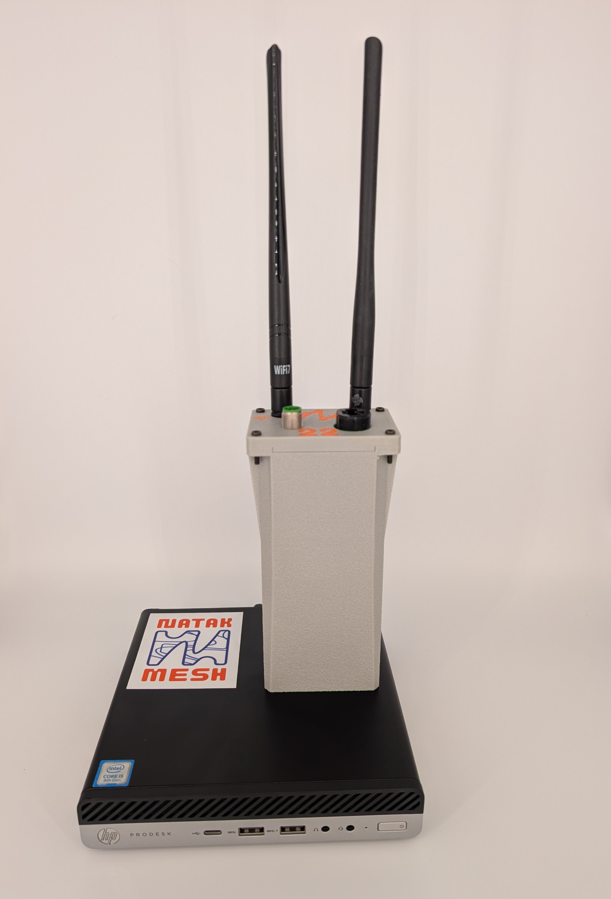
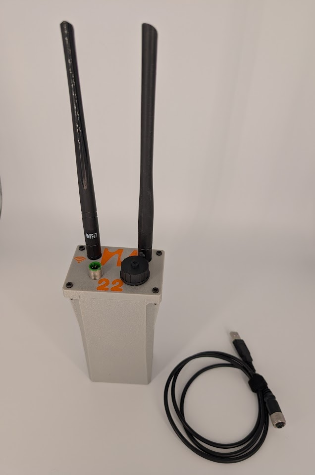
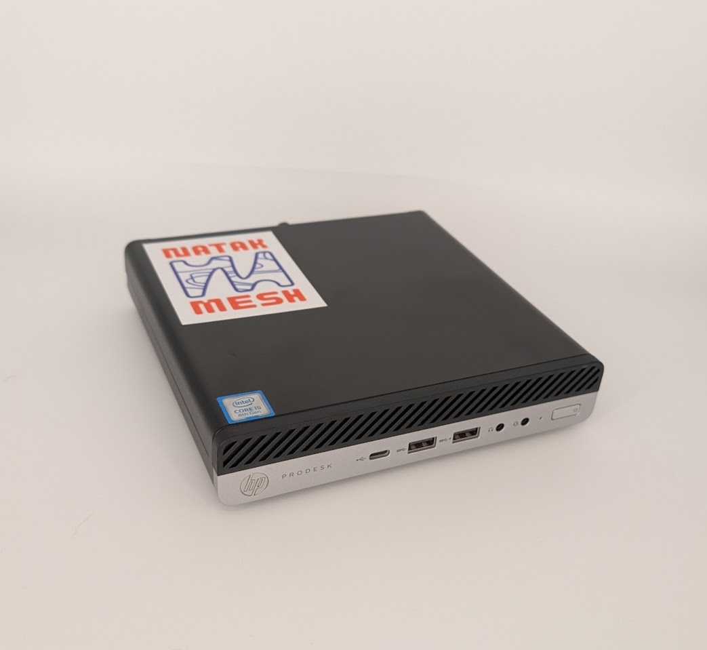

Your Own Private TAK Network
Off-grid mesh radios and a private TAK server — run TAK your way, with or without internet, and keep it all under your control.

Our Products

Nucleus
Off-grid ATAK over WiFi + LoRa mesh — bridges internet when it's available
Learn More
Natak TAK Server
Your own private TAKServer appliance — accessible anywhere over VPN
Learn MoreWhy Natak Mesh
Built for TAK
Native ATAK over mesh and a full official TAKServer — your network, no third party.
On-Grid or Off
The Nucleus needs zero infrastructure but uses internet when it's there; the TAK Server runs over any connection you've got.
Private & Self-Hosted
Your hardware, your keys. Tailscale VPN keeps remote access private — no public cloud.
Better Together
Pair the server with the mesh, or run an edge server right on a node — field and remote users share one TAK server.